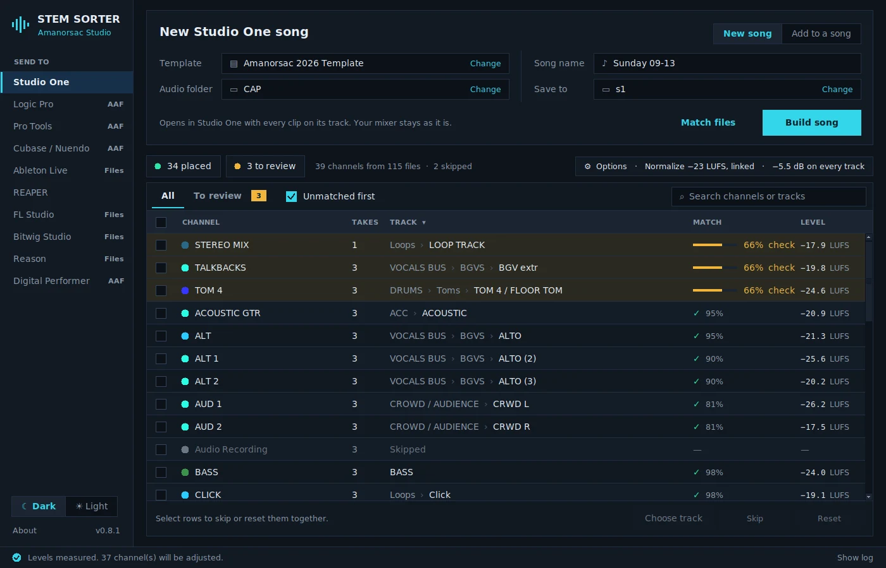
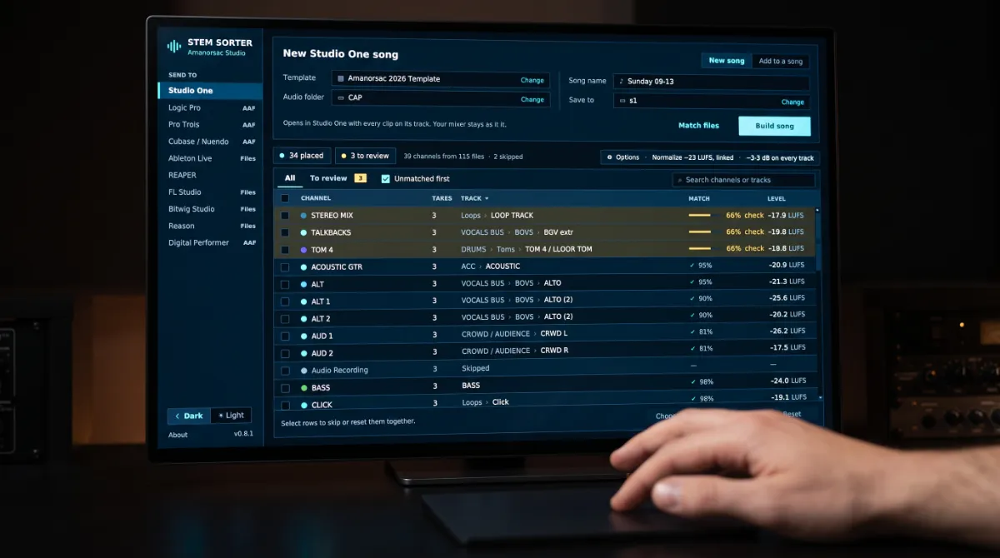
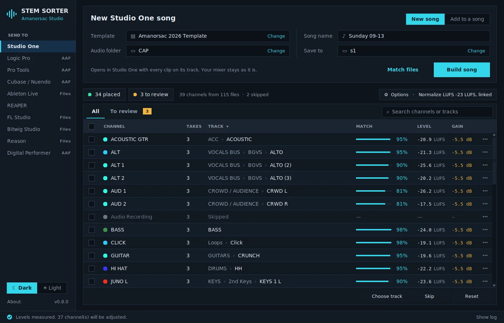
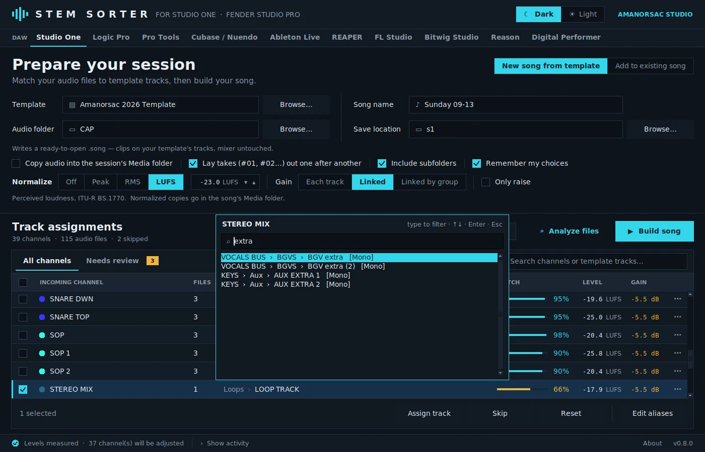
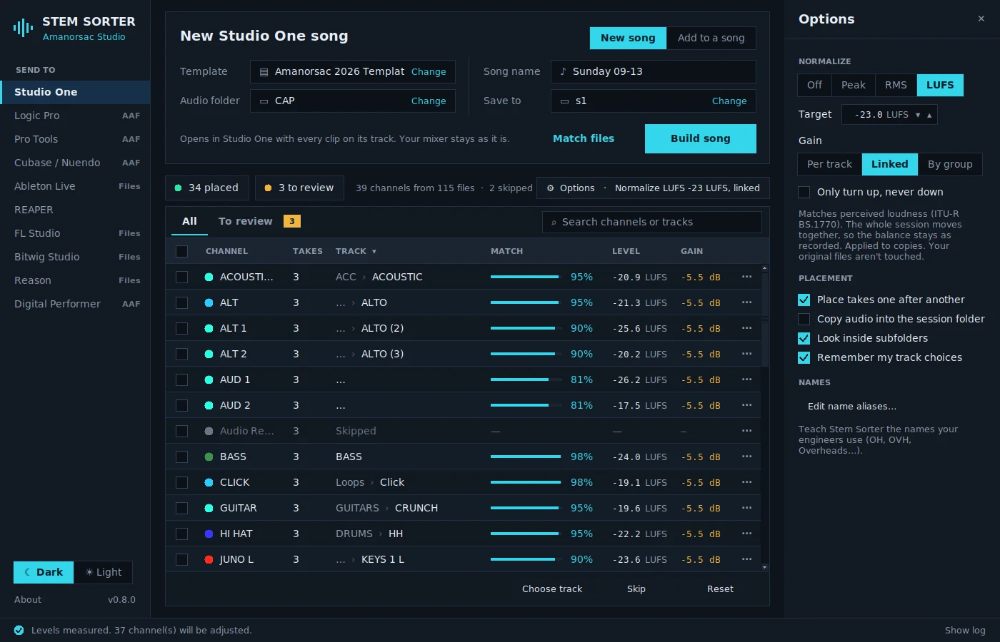
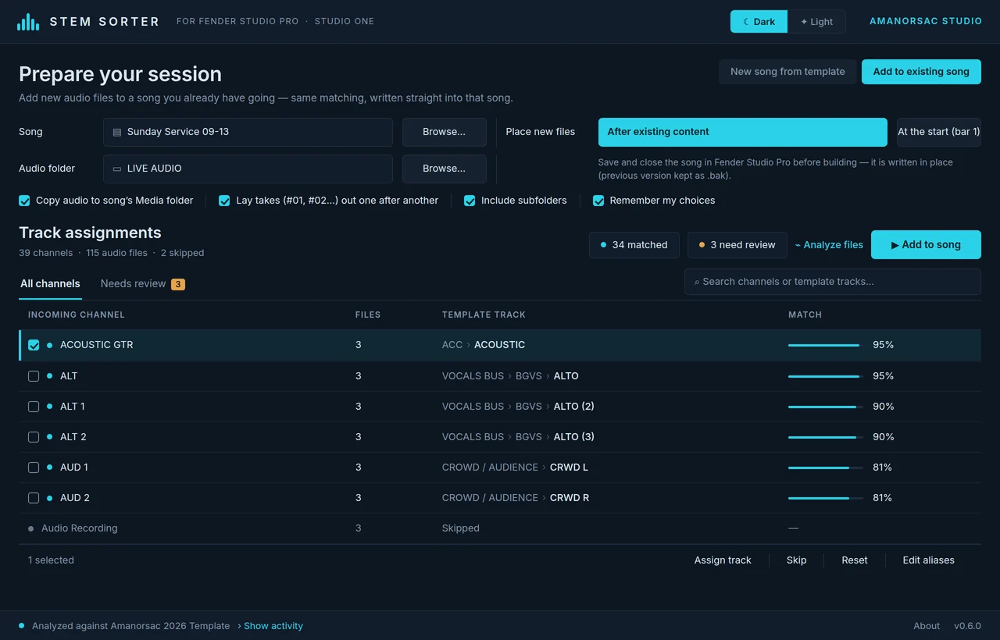
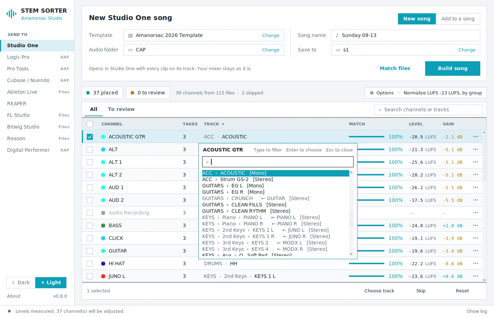
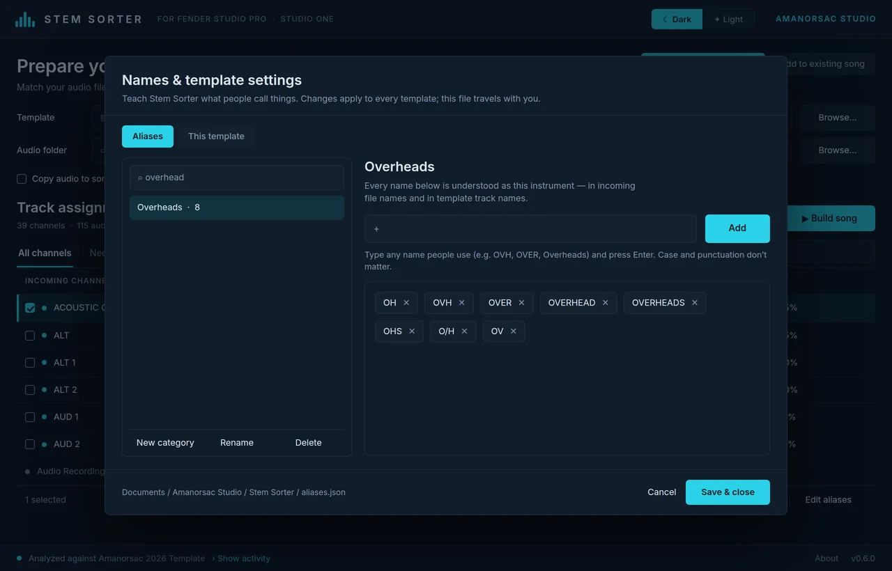
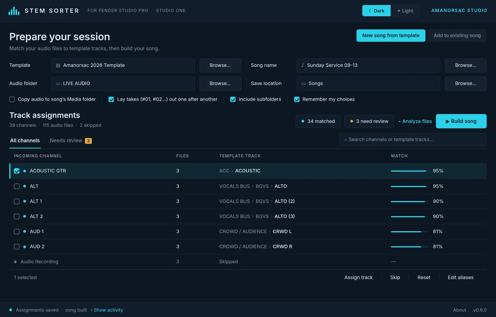

New · Windows and macOS · works with 10 DAWs
Stem Sorter
Quickly import session files into your mix template.
Stem Sorter reads the names of your recorded files, works out what each one is, and puts every file on the right track of your template. Kick on the kick track, overheads on the overheads, tenor 2 on tenor 2, in the DAW you already use.
$35 once · one licence for two computers · Windows 10 and 11, macOS 11 and later · installs through Amanorsac Hub

Every Session Starts the Same Way
Forty files land in a folder with names like KICK #03, OVH L #03, TNR 2 #03 and SNARE DWN #03. You open your template and drag them in one by one, find the right track for each, then fix the levels. Twenty minutes later you can finally press play. Now do that every Sunday, for every client and after every rehearsal.
Stem Sorter does that part for you. Point it at the folder and your template, and it matches every file to its track, shows you the few it is not sure about, and builds the session. The dragging is gone, and you start the mix with every file already in place.

Matching
It Understands How Engineers Name Things
Every engineer names channels differently. OH, OVH, Overheads and Over L are all overheads. LV, Lead Vox and WL are all the lead vocal, and TNR 2 is the second tenor mic. Stem Sorter already knows hundreds of these names, and when your engineer uses one it has never seen, you can teach it in a few seconds and it remembers for good.
Template
It Knows Your Template
Point Stem Sorter at your template and it reads every track and folder in it. Then it matches each incoming channel to the right track, including left and right, and 1, 2 and 3. The few channels it is not sure about go to the top of the list in amber, so you check three rows instead of forty.

Build
Press Build and Get a Session
When the list looks right, press Build and Stem Sorter writes a session for your DAW with every file in place. Studio One and REAPER open ready to play. Logic, Pro Tools, Cubase and Digital Performer get an AAF with your tracks named and in order. Your inserts, sends and buses stay exactly as you saved them, because Stem Sorter only adds clips and never rebuilds your mixer.

Works With Your DAW
Pick your DAW in the sidebar and everything else stays the same. What you get at the end depends on what your DAW can open.
Studio One and Fender Studio Pro
A song that opens ready to play, with every clip on its track. Or add new files to a song you already have going.
REAPER
A project that opens ready to play, with every item on its track. Or add new files to an existing project.
Logic Pro, Pro Tools, Cubase, Nuendo and Digital Performer
An AAF file with the audio inside, tracks named and ordered like your template, plus the import steps for your DAW.
Ableton Live, FL Studio, Bitwig Studio and Reason
A folder of renamed files, numbered in your template's order, with a track sheet that shows where each one goes.

Every Sunday
Built for Churches and Live Recordings
Stem Sorter came out of mixing church services and live recordings, where the same rig sends the same forty channels every week. Live captures arrive as #01, #02 and #03 for each channel, and Stem Sorter lays each take out one after another so every channel stays in sync across the whole service.
Every choice you confirm is saved for that template, so the next service from the same rig sorts itself.
More Than a Sorter

Review
Fix Anything in One Click
Click any track cell and a list opens right there. Type a few letters, press Enter, and Stem Sorter jumps to the next row that needs you. There are no pop-up windows to fight with.

Levels
Normalize While You Sort
Bring everything to a target level by peak, by average level (RMS) or by loudness (LUFS). You can move each track on its own, move the whole session together so the engineer's balance stays, or move each group such as drums or backing vocals together.
You see every level and gain change before you build, and your original files are never touched.

Mid-project
Add to a Song You Already Have Going
When new files arrive halfway through a project, pick the song and Stem Sorter places them after what is already there. It keeps a backup of the previous version first, so nothing is lost.

Dark or Light
Two themes that switch live, and your template's own track colours come along.

One Template, Every DAW
Write your track list once, or let Stem Sorter copy it from your Studio One or REAPER template, then use it for Logic, Pro Tools, Ableton or anything else.

Safe by Design
Stem Sorter never rebuilds your mixer and never creates or deletes tracks. It only adds clips, in the DAW's own format, which is why the sessions it builds open cleanly.
Five Steps, About a Minute
Pick your DAW in the sidebar. Choose your template and the folder your files are in. Click Match files, and you get one row per channel with the takes grouped together. Check the amber rows at the top and click a track to change any of them. Then press Build, open the session and press play.
Set Up Your Template Once
Stem Sorter only places files on tracks that already exist. That is what keeps your sessions safe, so give it room. Keep a few spare tracks in each section, such as SPARE 1 to SPARE 4 under the backing vocals, a couple under keys and one or two under drums. Stem Sorter uses tracks named SPARE, EXTRA, FREE, OPEN or TBD when a channel has nowhere else to go.
Name your tracks the way your files arrive, like OH L, SNARE BOTTOM, TNR 2 and CRWD R. The closer the names, the fewer rows you will need to check.
Tech Specs
Platforms
Windows 10 and 11 (64 bit).
macOS 11 Big Sur and later, Apple silicon and Intel.
Full Session DAWs
Fender Studio Pro and Studio One 6, 7 and 8 (optimised for 8). REAPER 6 and 7.
AAF DAWs
Logic Pro, Pro Tools, Cubase Pro and Nuendo, and Digital Performer via AAF import.
File Folder DAWs
Ableton Live, FL Studio, Bitwig Studio and Reason via a prepared, numbered file folder and track sheet.
Audio Files
WAV, BWF, RF64 and AIFF, mono or stereo, any sample rate. FLAC and MP3 are placed but not normalized.
Normalize
Peak, RMS or LUFS. Per track, linked across the session, or by group. Originals are never changed.
Takes
Numbered live takes laid out one after another, with every channel kept in sync.
Licence
One key for two computers. Activate once online, then it works offline and checks in at least every 30 days.
Signing
Windows installer Authenticode signed. macOS app Developer ID signed and notarized by Apple.
Questions
Will it change my original recordings?
Do I need to be online?
Can I use it on my laptop and my studio computer?
My engineer names things differently.
Why does it not create missing tracks?
What if a file does not match any track?
Is it signed?
From people who use it
What Engineers Are Saying
Be the first to leave one.
Thank you.
It goes up once I have read it, usually within a day or two.
Stem Sorter
$35
Bought once and yours on two computers, the studio machine and the laptop that goes out to the room. A year of updates is included, and the version you have keeps working after that.
How to Pay
In Ghana, pay with MTN MoMo. Everywhere else, pay by card.
Ghana · MTN MoMo
Pay at the studio's MoMo link, then send the screenshot.
- Open the link or scan the code. The request is to Stephen Amanor Sackey, 024 685 8947.
- Send the price of Stem Sorter. Not sure of the cedi amount? Ask on WhatsApp first.
- Send the screenshot to 024 685 8947 on WhatsApp with the app's name and the email of your account here. Your code comes back the same day and unlocks it in My Apps.

Everywhere Else · Card
Pay by card, or ask us anything first.
Use the Buy button above. It takes Visa, Mastercard and Apple Pay in US dollars, and Stem Sorter is in My Apps the moment it clears.
Questions before you buy? Scan the code and message the studio on WhatsApp.
Message on WhatsApp
Stem Sorter is not affiliated with any DAW maker. All product names are trademarks of their owners.